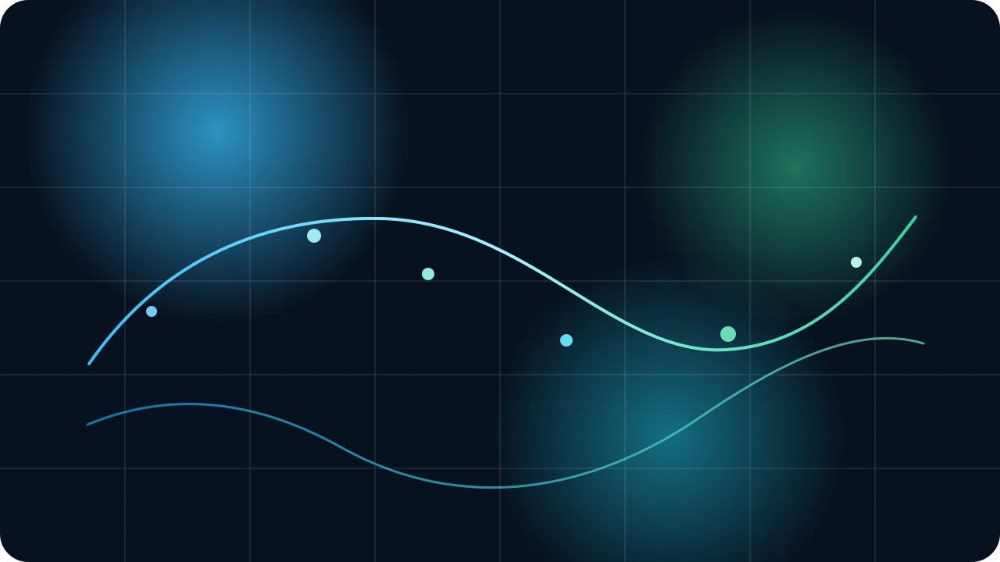

Entropy Density Map
Visualize the shape of local randomness

A local-only illustration to reinforce that entropy is created in-browser, not fetched from a third-party service.
RandKeyKit
Secure local-first secret generation
Offline cryptographic toolkit
Nine local generators, live entropy feedback, and secure defaults for passwords, tokens, salts, and key material.
Entropy Density Map

A local-only illustration to reinforce that entropy is created in-browser, not fetched from a third-party service.
Secure Local Engine
Bundled wordlist, local fonts, strict CSP, and Web Crypto primitives only. Designed for environments that value predictability over magic.
CSP
Self-only
Runtime
No CDN
System Resources
Generators
9
Runtime dependencies
0
Clipboard fallback
Enabled